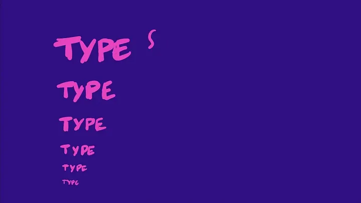
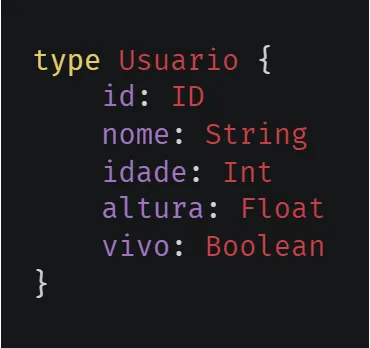
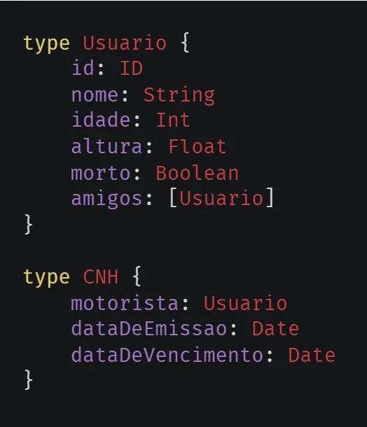
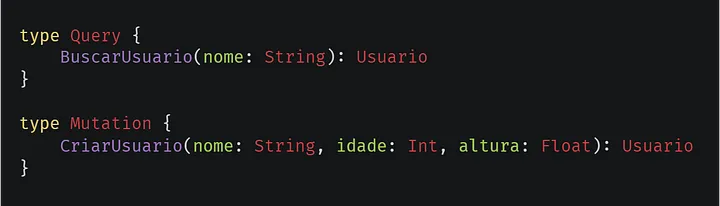
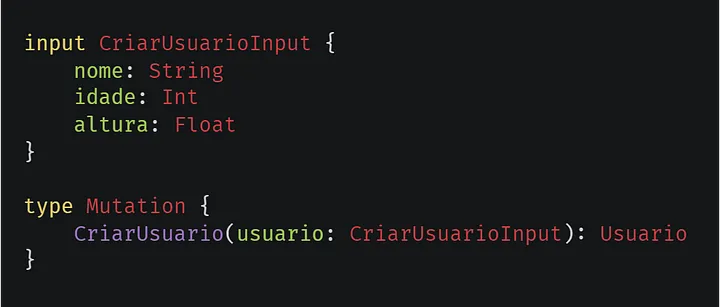
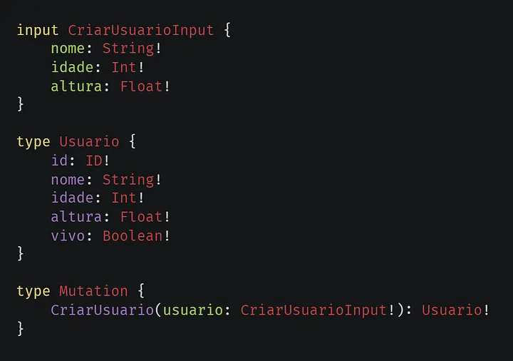

Criando uma API GraphQL com Java Spring Boot — Parte 2: GraphQL
Nesse artigo criaremos a base da nossa API através do esquema GraphQL.

GraphQL Types.
SDL
As API GraphQL são definidas através de arquivos escritos em SDL ou Schema Definition Language (Linguagem de Definição de Esquema), esses arquivos normalmente possuem a extensão .graphql ou .gql, já no caso das API feitas em Java com Spring Boot, nós utilizamos a extensão .graphqls ou .gqls.
Schemas
Os esquemas em GraphQL são o que definem o comportamento da API, elas decidem os dados necessários para uma requisição e também definem os tipos de dados que podem ser retornados, por isso APIs GraphQL são conhecidas por serem auto-documentadas, essa base também permite um melhor controle de informações e maior velocidade em requisiçoes.
Types
As APIs GraphQL são construídas através de um sistema de tipagens, essas são scalar, object, operation, enum, interfaces, inputs e unions. Iremos cobrir todas elas exceto enum, interfaces e unions, já que não as utilizaremos nesta API. Fique á vontade para pesquisar sobre eles caso tenha interesse.
Scalars
Scalars são tipos que definem uma estrutura de dados em GraphQL, os tipos nativos são ID, String, Boolean, Int e Float. Dentre esses também temos tipos scalar customizados, eles normalmente extendem a base de tipos nativos do GraphQL, alguns exemplo são os Date, Time, DateTime e UUID.

Exemplo de tipos Scalars em GraphQL.
Objects
Objects são tipagens que definem o a base de nosso esquema, vamos usar de exemplo a imagem abaixo, no caso dela “Usuário” é o objeto que define um tipo, esse tipo pode ser reutilizado depois em outros codigos. Dentro desse objeto nos temos também os fields (campos), e eles são o nome, altura, idade, e etc. Esses campos definem um tipo scalar, ou podem definir outros tipos de objeto dentro deles, isso diz pra nossa API, qual tipo é esperado receber e retornar.

Exemplo de tipos Objects em GraphQL.
Operations
Operations são tipagens nativas do GraphQL que definem métodos de requisição na API, existem atualmente três operações nativas em GraphQL, elas são Query, Mutation e Subscription. Query é usado para buscar informação, Mutation é usado para modificar informação, Subscription é uma Query em tempo real, normalmente feita através de uma conexão WebSocket. Dentro da operações podemos criar métodos para manusear nossa API, esses métodos definem parâmetros que devemos inserir, e também definem os tipos de dados para retornar.

Exemplo de tipos Operations em GraphQL.
Inputs
Inputs são tipagens usadas para simplificar parâmetros de operações, inputs não podem ser utilizados como objetos de retorno em métodos.

Exemplo de tipos Inputs em GraphQL.
Null
Todos os exemplos mostrados neste artigo possuem uma coisa em comum, isso é a falta de controle sobre valores nulos, nas APIs GraphQL podemos definir se um valor é opcional ou obrigatório, no caso de um valor ser obrigatório qualquer operação feita sem ele dará erro, o mesmo vale se retornar nulo um campo que é não-nulo. Para forçar um valor adicionamos “!” no final de um campo.

Exemplo de um Schema não nulo em GraphQL.
Criando o Schema de nossa API
Agora finalmente criaremos o esquema de nossa API, isso será o ponto de partida para a funcionalidade de toda nossa API. Criaremos três arquivos que são schema.graphqls, inputs.graphqls e types.graphqls. Além disso adicionaremos um Scalar customizado do tipo Date, então vamos lá.
Adicionando tipos Scalar customizados
Sempre que criamos um novo projeto Maven, nós obtemos um arquivo do tipo pom.xml, esse arquivo possui todas as nossas dependências, e podemos adicionar mais caso necessitamos, o que é o este caso. Adicionaremos no nosso pom uma nova dependência.
Agora podemos adicionar o tipo Scalar dentro do nosso Schema.graphqls
O tipo Scalar Date é descrito nessa forma “AAAA-MM-DD” ou “1999–09–30”
Quase lá, agora devemos adicionar isso na Runtime do Spring, criaremos uma pasta chamada configs dentro do src/main/java/, lá criamos um arquivo chamado de Beans.java, beans são componentes que o Spring escaneia e adiciona ao seu contexto para poder utilizar depois, dentro do Beans.java, nós criaremos um novo método para adicionar o Scalar no contexto do Spring.
Adicionando o Scalar ao contexto do Spring ao iniciar a aplicação.
Definindo o Schema da API
Hora de definirmos o Schema de nossa API, primeiramente criaremos nossos objetos no types.graphqls, definiremos dois tipos “Usuario” e “Tarefa”, atenção ao campos obrigatórios e também usamos os tipos Scalar customizados que adicionamos.
Agora precisamos definir o resto do nosso Schema.graphqls, criaremos as nossas Queries e Mutations para a API.
Agora criaremos os Inputs para nossas Queries e Mutations.
E acabamos por aqui, depois desse longo artigo eu espero que tenha conseguido entender GraphQL e seu sistema de tipagem, abaixo deixareis alguns links que ajudaram ou estão relacionado a esse artigo. Na próxima parte começaremos a modelar nossa base de dados.